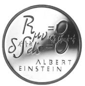
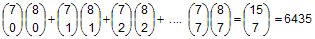
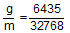

Lösung Puzzle 32: Der Münzenwurf zum zweiten

Gedenkmünze Einstein
Anna wirft siebenmal und Berta achtmal.
a) Wie gross ist die Wahrscheinlichkeit, dass Berta dabei mehr 'Zahl' wirft als Anna?
b) Wie gross ist die Wahrscheinlichkeit, dass Berta genau so viel mal 'Zahl' wirft wie Anna?
c) Wie gross ist die Wahrscheinlichkeit, dass Anna dabei mehr 'Zahl' wirft als Berta?
Insgesamt gibt es m = 215 = 32768 mögliche Fälle.
Zur Lösung von a) braucht man aber nicht alle günstigen Fälle des Ereignisses A = "Berta wirft mehr 'Zahl' als Anna" aufzuzählen.
Da Berta genau einmal mehr wirft als Anna, so sind die zwei Ereignisse A und A = "Berta wirft mehr 'Kopf' als Anna" entgegengesetzte
Ereignisse: Wenn A eintritt, so tritt A nicht ein und umgekehrt. Da 'Kopf' und 'Zahl' gleich wahrscheinlich sind, so muss
die Wahrscheinlichkeit für "Berta wirft mehr 'Zahl' als Anna" = P(A) = 0.5 sein.
Zur Lösung von b):
Die günstigen Fälle g für das betrachtete Ereignis B = "Berta wirft genau so viel mal Zahl wie Anna" ist die
Summe von "Anna und Berta werfen genau 0-mal Zahl" + "Anna und Berta werfen je genau 1-mal Zahl" + ... + "Anna und Berta werfen je genau 7-mal Zahl" =
.
Die Wahrscheinlichkeit für "Berta wirft genau so viel mal 'Zahl' wie Anna" ist daher:
P(B) =  ≈ 19.638%.
Zur Lösung von c):
P("Anna wirft mehr 'Zahl' als Berta") = 1 - P(A) - P(B) = 30.362%.